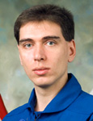

Lyndon B. Johnson Space Center
Houston, Texas 77058
|
National Aeronautics and Space Administration Lyndon B. Johnson Space Center Houston, Texas 77058 |
 |
Biographical Data |
||
VOLKOV, SERGEY ALEXANDROVICH
(cOLONEL, rUSSIAN aIR fORCE)
SOYUZ TMA-M COMMANDER
ISS FLIGHT ENGINEER
INSTRUCTOR-test-cosmonaut OF yU.a. gagarin cosmonaut training center, russia
472ND wORLD sPACE eXPLORER, 101ST cosmonaut of the russian federation
PERSONAL DATA: Born April 1, 1973, in Chuguyev, Kharkov Region, Ukraine. Married to Natalia Volkova (Shinkarenko). They have one son, Egor, born in 2001. His hobbies include sport games, tennis, windsurfing, reading, museums.
EDUCATION: After graduation from Star City High School in 1990 Volkov entered the Tambov Air Force Pilot School named after M. Raskova from which he graduated in 1995 as a pilot-engineer.
AWARDS: Hero of the Russian Federation (2009), Air Force medals.
EXPERIENCE: After graduation from the pilot school he served as second commander in the Air Force. He flew L-29, L-39, IL-22, IL-76 and Tu-134 aircraft. Volkov has logged over 500 hours of flight time. He is a Class 3 Air Force pilot and SCUBA diver
SPACEFLIGHT TRAINING: Volkov was selected as a test-cosmonaut candidate of the Gagarin Cosmonaut Training Center Cosmonaut Office in December of 1997. He finished basic space training in November 1999, and was qualified as a test-cosmonaut. Since January 2000 he completed advanced training with a group of cosmonauts.
From September 2001 – February 2003 Volkov completed training as a Soyuz commander and ISS pilot of the ISS 7 backup crew. From April 2004 to February 2005 he trained as ISS-11 prime crewmember for a shuttle launch (STS-121). From January 2005 to February 2006 Volkov was assigned to the ISS cosmonaut pool. From February to April 2006 Volkov trained as an ISS 13/Soyuz 10 visiting crew backup crewmember, and he backed up the space flight participant of that mission.
From May 2006 to April 2008 Volkov trained as an ISS 17 prime crew commander and Soyuz TMA commander. From December 2009 he has been training as a Soyuz TMA-M commander and ISS flight engineer in the ISS-25/26 backup crew.
SPACEFLIGHT EXPERIENCE: Volkov performed his first spaceflight April, 8 – October 24, 2008 as Soyuz TMA-12 commander and ISS commander. During this flight JEM PM of the Kibo module and the JEMRMS manipulator were installed, and ATV-001 “Jules Verne” operations took place for the first time. Volkov logged 12 hours 15 minutes of EVA time in two spacewalks and logged a total of 199 days in space.
SEPTEMBER 2010